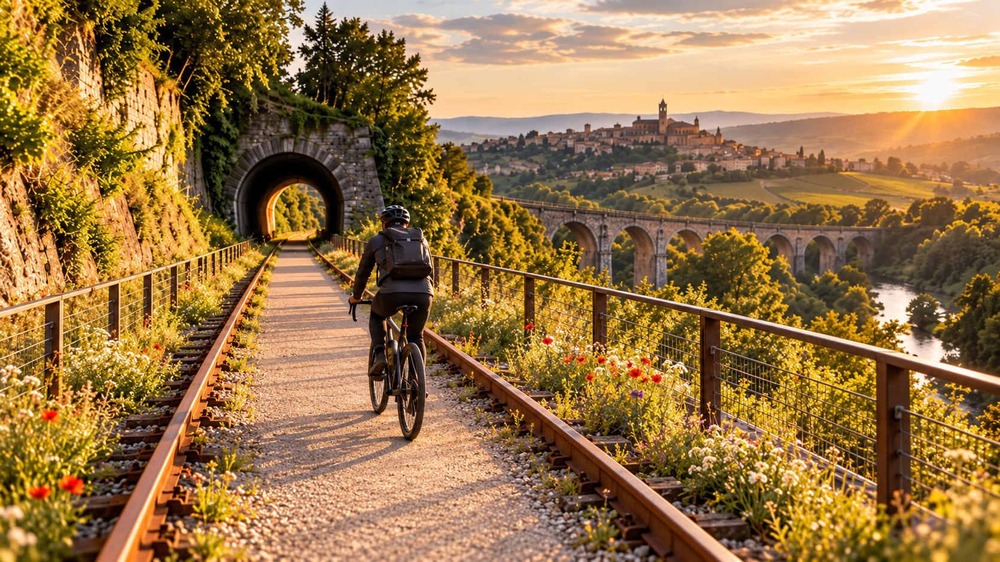

Andare al lavoro
Una possibilità concreta per chi vorrebbe lasciare l'auto a casa quando il tragitto lo consente.
Chivasso – Asti · 51 km di opportunità
Una ferrovia oggi usata per treni turistici occasionali potrebbe diventare una ciclovia permanente. Per andare al lavoro, raggiungere i paesi vicini e spostarsi in modo più sicuro.

Chi vive nei nostri paesi lo sa: anche pochi chilometri in bici possono significare affrontare strade veloci e trafficate. E se esistesse un'alternativa continua, protetta e utile anche per gli spostamenti quotidiani?
Io ci andrei a lavorare, in bicicletta. Oggi il problema è arrivarci in sicurezza.
Una possibilità concreta per chi vorrebbe lasciare l'auto a casa quando il tragitto lo consente.
Separare gli spostamenti ciclabili dal traffico motorizzato, dove il progetto lo rendesse possibile.
Muoversi tra i centri abitati, anche in bici elettrica, senza dipendere sempre dall'automobile.
Potenziali opportunità per le ex stazioni: ristoro, ospitalità, noleggio e assistenza biciclette.
Non proponiamo una pista parallela da inventare tra ponti e gallerie: chiediamo di studiare la riconversione dell'intero sedime ferroviario, comprese le opere esistenti.
Chiediamo alla Regione Piemonte di promuovere un confronto con gli enti competenti, RFI, il Ministero e i Comuni interessati, per verificare la possibilità di trasformare il tracciato ferroviario in una ciclovia permanente.
Studiare l'utilizzo del tracciato ferroviario esistente, senza dare per scontata la costruzione di una pista parallela.
Valutare strutture, costi, accessibilità, illuminazione, drenaggio, sicurezza e soluzioni di pavimentazione.
Studiare accessi ai paesi, collegamenti verso lavoro e scuole e uso potenziale da parte dei pendolari.
Valutare punti ristoro, noleggio e riparazione bici, accoglienza e piccole attività nelle aree ferroviarie.
L'obiettivo è arrivare alle istituzioni con una proposta documentata, adesioni dei cittadini e dati su come un collegamento sicuro potrebbe essere utilizzato.
Coinvolgere cittadini e attività locali, soprattutto chi utilizzerebbe la ciclovia per lavoro, studio e spostamenti quotidiani.
Predisporre il testo formale e raccogliere le firme con le modalità previste dal Consiglio regionale del Piemonte.
Depositare la petizione e richiedere il confronto pubblico e tecnico necessario a valutare la riconversione.
Per portare numeri utili alle istituzioni servirà capire quanti cittadini prenderebbero la bici per andare al lavoro, a scuola o nei paesi vicini. Questo è un esempio del sondaggio che attiveremo.
La raccolta delle adesioni online non è ancora attiva. Qui puoi preparare una testimonianza da copiare e condividere: nulla viene inviato o memorizzato.
La proposta nasce da un bisogno concreto. Per diventare un progetto realizzabile deve superare verifiche tecniche, amministrative e finanziarie. Sono parte della discussione, non dettagli da nascondere.
La proposta chiede di valutare una riconversione integrale e permanente del sedime in ciclovia. Questa scelta sarebbe incompatibile con il normale utilizzo ferroviario della stessa sede, e andrebbero quindi considerate le conseguenze per i treni storici, il patrimonio ferroviario e le autorizzazioni necessarie.
Non è possibile saperlo senza uno studio. Qualsiasi soluzione dovrebbe garantire sicurezza, stabilità, drenaggio, accessibilità, manutenzione e compatibilità con ponti e gallerie. Le opzioni tecniche vanno confrontate nei costi e nelle prestazioni.
Non abbiamo ancora un dato affidabile. Per questo vogliamo raccogliere testimonianze e, successivamente, un sondaggio strutturato distinguendo pendolarismo, scuola, commissioni e turismo.
Per il Consiglio regionale del Piemonte, la petizione può essere presentata da un cittadino singolo o da più cittadini: occorre la sottoscrizione autenticata di almeno un firmatario, con nome, cognome, luogo e data di nascita e residenza. Le adesioni espresse sul nostro sito non sostituiscono tale sottoscrizione. Consulta le istruzioni ufficiali.
No. Questa è la pagina di presentazione dell'iniziativa. Le firme della petizione dovranno essere raccolte secondo le indicazioni del Consiglio regionale del Piemonte. Le eventuali adesioni digitali avranno una funzione di sostegno e partecipazione, senza essere presentate come firme ufficiali.
Non basta una decisione del singolo Comune. Occorre una valutazione con la Regione Piemonte e con i soggetti responsabili della linea e della sua destinazione, tra cui RFI e il Ministero competente. La petizione serve a chiedere formalmente l'avvio di questo confronto.